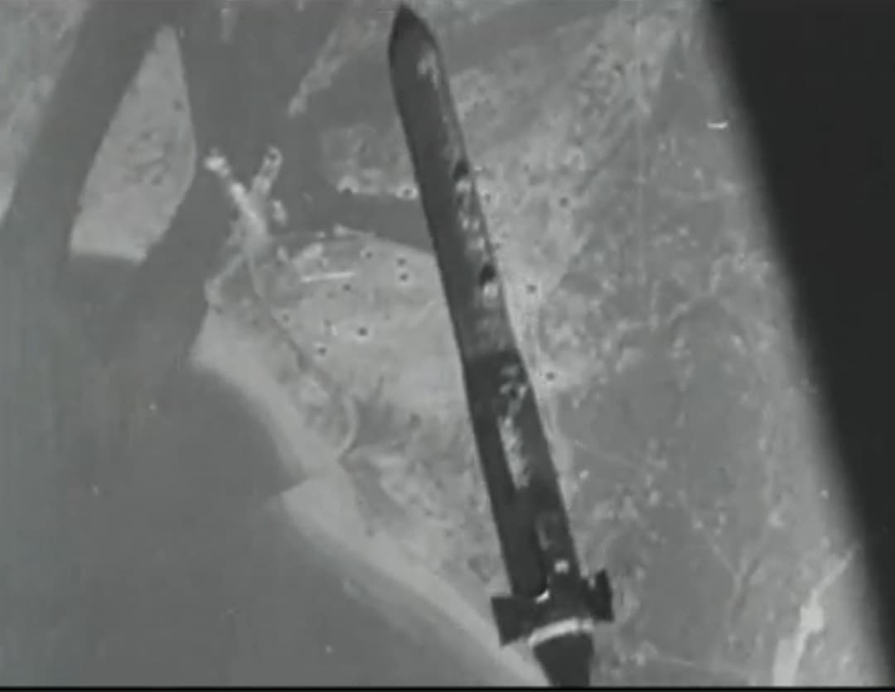

La Disney Bomb est le surnom donné à une bombe perforante britannique utilisée par le RAF Bomber Command durant la Seconde Guerre mondiale. Conçue pour frapper à très haute vitesse et pénétrer le béton, elle est destinée aux bunkers, aux bases de U‑boats et aux sites fortifiés. Son nom ne vient pas d’un dessin sur la bombe, mais d’un film de propagande des studios Disney.
La Disney Bomb est une bombe perforante à haute vitesse :
Elle s’inscrit dans la même logique que les bombes Tallboy et Grand Slam : frapper peu de cibles, mais les frapper de manière définitive.

Le surnom Disney Bomb est attribué à un film de propagande, Victory Through Air Power (1943), connu en français sous le titre Victoire dans les airs, produit par les studios Disney. Ce film, réalisé pour soutenir la stratégie du bombardement aérien, montre des bombes :
Les ingénieurs et les officiers qui travaillent sur les bombes perforantes britanniques voient dans ce film une illustration idéale de ce qu’ils veulent obtenir en réalité. Ils parlent alors de « bombe comme dans le film Disney », et le surnom Disney Bomb s’impose dans certains cercles techniques et opérationnels.
La Disney Bomb est parfois appelée Disney Swish en référence au bruit qu’elle produit en tombant : un sifflement aigu, un swish caractéristique, qui rappelle les effets sonores des dessins animés. Pour les équipages, cette bombe :
Le surnom n’est jamais officiel, mais il circule dans les escadrons de bombardiers et dans certains documents techniques.
La Disney Bomb est utilisée dans des missions où la précision et la pénétration sont plus importantes que le nombre de bombes larguées. Elle vise notamment :
Elle est larguée depuis des bombardiers lourds du RAF, dans des conditions calculées pour optimiser la vitesse d’impact.
Les images de Disney Bomb montrent généralement :
Le lien avec Disney apparaît surtout dans les archives de propagande et les films militaires, où la bombe est représentée de manière spectaculaire pour convaincre de son efficacité.
La Disney Bomb est une bombe perforante britannique utilisée par le RAF Bomber Command pour frapper des cibles durcies. Son surnom vient du film de propagande Victory Through Air Power (1943), produit par les studios Disney, qui montre des bombes pénétrant des structures massives à haute vitesse. Elle incarne la rencontre entre la technologie militaire et la culture visuelle de l’animation, et ne doit pas être confondue avec les bombes simplement décorées de personnages Disney par les équipages.